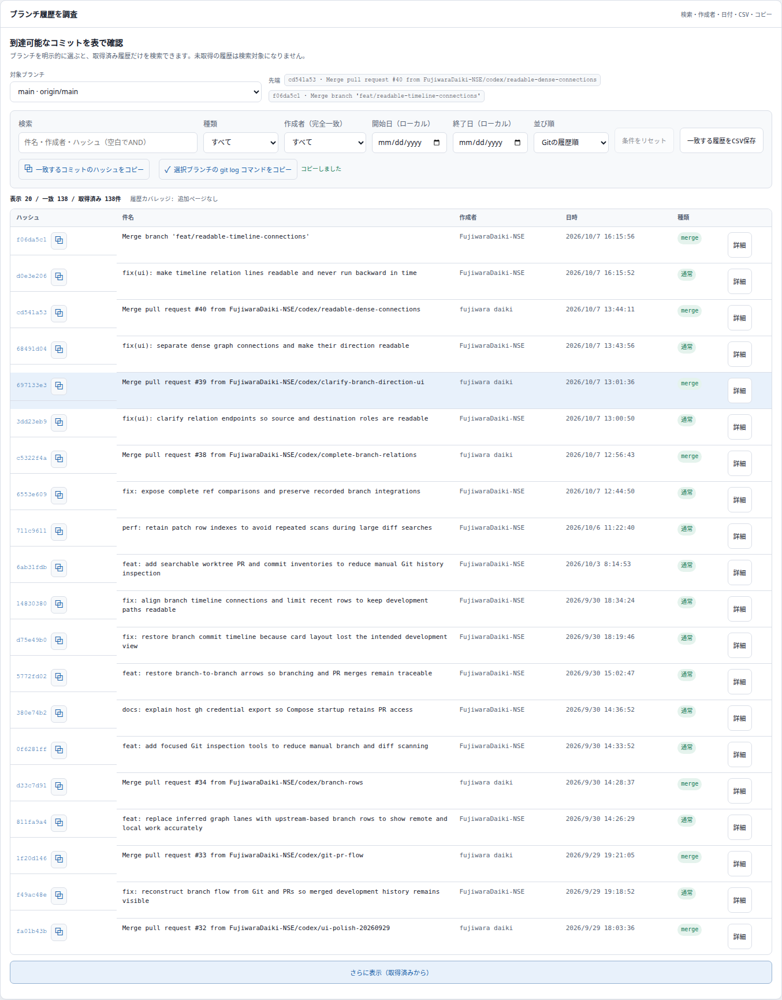
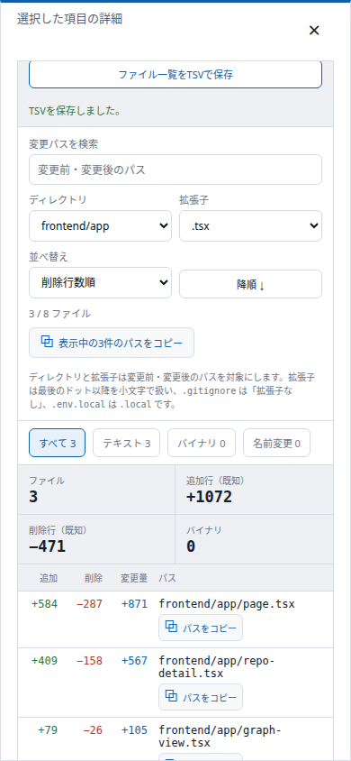
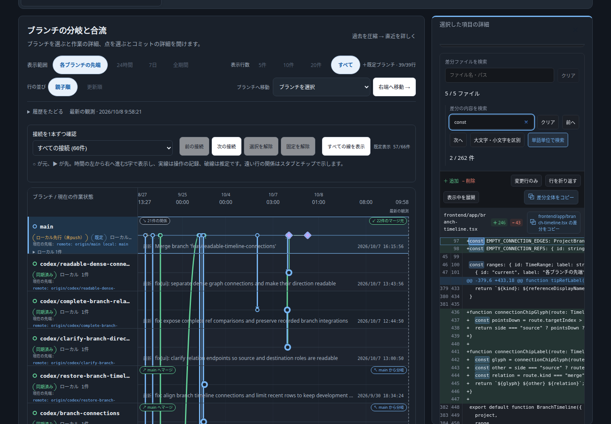

30 → 100点：機能追加14件・計70点。前日までの改善や、同じ変更の見た目・文言は重複加点していません。
| 対象 | 機能 | 利用者にとっての効果 | 点 |
|---|---|---|---|
| 変更ファイル | ディレクトリで絞り込み | 担当ディレクトリの変更だけ確認できる | 5 |
| 変更ファイル | 拡張子で絞り込み | 実装・スタイル・資料をファイル種別で調べられる | 5 |
| 変更ファイル | 表示中パスの一括コピー | 絞り込んだファイルをレビューや調査に渡せる | 5 |
| 変更ファイル | 追加行数・削除行数で並べ替え | 追加が多い変更と削除が多い変更を別々に見つけられる | 5 |
| 履歴 | 作成者の完全一致フィルター | 件名中の同名文字列と混同せず担当者の変更を追える | 5 |
| 履歴 | 開始日・終了日の指定 | ローカル暦日で対象期間を指定できる | 5 |
| 履歴 | 一致するフルハッシュの一括コピー | 読み込み済みの検索結果を外部調査に渡せる | 5 |
| 履歴 | 選択ブランチのgit logコマンドコピー | 選択した先端の履歴をターミナルで再確認できる | 5 |
| worktree | upstream同期状態フィルター | 未push・未pull・分岐・同期済み・追跡先なし・未取得を分けて探せる | 5 |
| worktree | ブランチの完全一致フィルター | 部分一致検索に混ざる別ブランチを除外できる | 5 |
| worktree | 表示中のcdコマンド一括コピー | 複数の作業場所への移動コマンドをまとめて取得できる | 5 |
| worktree | 表示密度の切り替え | 操作を保持したまま、長い一覧をコンパクトに確認できる | 5 |
| 差分 | 大文字・小文字の区別 | 名前の大小文字が異なる識別子を区別して探せる | 5 |
| 差分 | 単語単位の検索 | 別の識別子の一部分を除外して一致箇所を探せる | 5 |
フロントエンド127件、バックエンド164件のテスト成功。本番ビルド成功。レビューP1指摘なし。指定Composeラッパーで再ビルド・起動し、稼働版でもブラウザー検証を通過しました。アクセス先：http://localhost:4412。
クリップボードの内容、絞り込んだTSV、日付逆転時のエラー、390px幅の表示、ライト・ダーク、長い差分で600行超の検索結果へ移動できることを確認。ブラウザーのpageerrorは0件。検索の境界条件は差分レスポンスのみを差し替えたテストも使用しています。
同期状態が未取得なら未取得として表示。履歴は読み込み済みだけを検索し、期間指定中は日時不明を除外します。Gitコマンドのコピーは自動実行しません。
履歴の作成者・期間指定とコピー

狭い画面の変更ファイル操作

実Git差分の単語検索（ダーク表示）

100点は指定の加点基準による達成であり、完全な品質保証ではありません。npm ciでは既存依存関係の脆弱性3件（high 2 / critical 1）が報告されています。依存バージョン更新と既存のCSS・Starlette警告は今回の変更に含めていません。